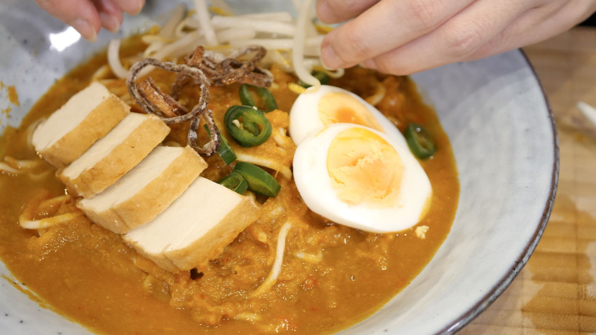

Mee Rebus

Description
Ingredients
- Water
- Beef
- Sweet Potatoes
- Shallots
- Garlic Cloves
- Chilli peppers (dried)
- Lemongrass stalks
- Galangal
- Candlenut
- Shrimps (dried)
- Oil
- Curry Powder
- Fermented soybean paste (taucu)
- Salt
- Sugar
- Eggs
- Green Chillies
- Tofu (firm and deep fried)
- Bean Sprouts
- Parsley
Steps
- Bring a pot of water to a rolling boil over high heat. Add beef into the pot. Once water begins to boil again, reduce heat to the minimum and allow it to simmer with the lid on.
- Steam cubed sweet potatoes until soft. A fork should go through easily when they are ready. Mash with fork or blend steamed sweet potatoes.
- Blend shallots and garlics finely. Add water to ease the blending process. Set aside.
- Blend dried chillies (soaked), lemongrass, dried prawns, galangal and candlenut until they turn into a paste. Add water to ease the blending process. Set aside.
- Heat oil in a pan over medium heat. Add blended shallots and garlic to saute until fragrant and slightly translucent. Then, add blended chili paste, tauchu and curry powder (with water added to create a paste). Continue sautéing until fragrant and oil separates from the paste. Set aside.
- Remove bones from broth and cut beef into bite sizes. Increase heat to the maximum and add cooked chilli paste into the beef broth. Once chilli paste has been incorporated into the broth, add mashed sweet potatoes. When gravy begins to boil, reduce heat to the minimum. Stir gravy and cook broth until reduced to desired thickness. Add salt and sugar to taste. NOTE: Taste before adding more salt or sugar.
- Cook egg noodles in a pot of boiling water until soft. Serve noodles with mee rebus gravy. Garnish with fried shallots, blanched bean sprouts, green chillies, fried firm tofu, boiled egg slices and some parsley.